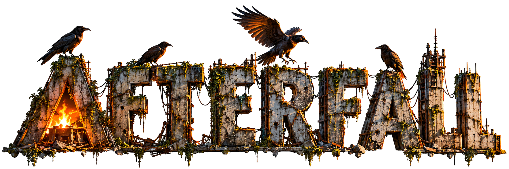

AfterFall
Strategy game prototype centered on territory, resources, infrastructure, and diplomacy.

Interactive Project / Strategy Game
In Development
AfterFall is a strategy game prototype in development.
Strategy game prototype centered on territory, resources, infrastructure, and diplomacy.

Interactive Project / Strategy Game
AfterFall is a strategy game prototype in development.
Music, new projects and updates from R&G.
Your email is used for Resistance & Ground updates. To leave the list, request removal.